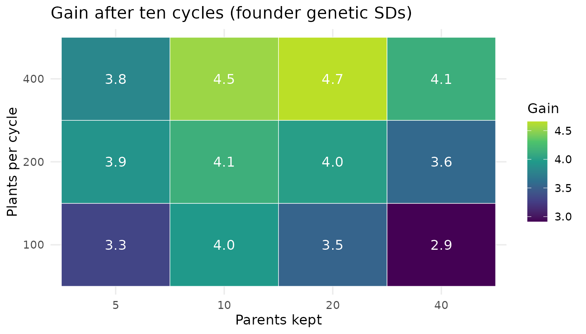
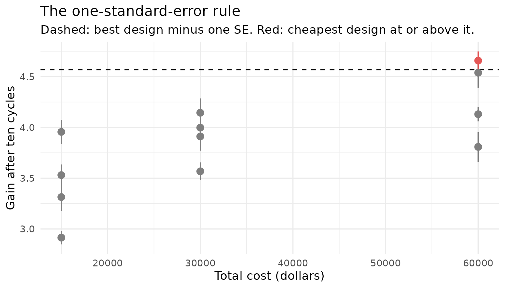
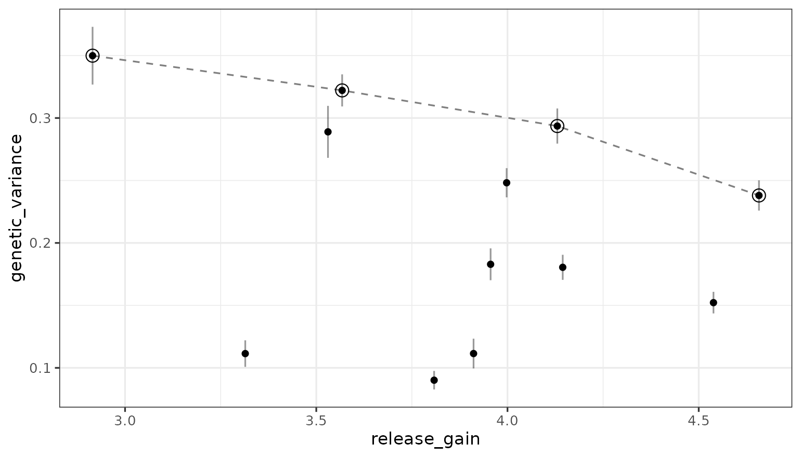
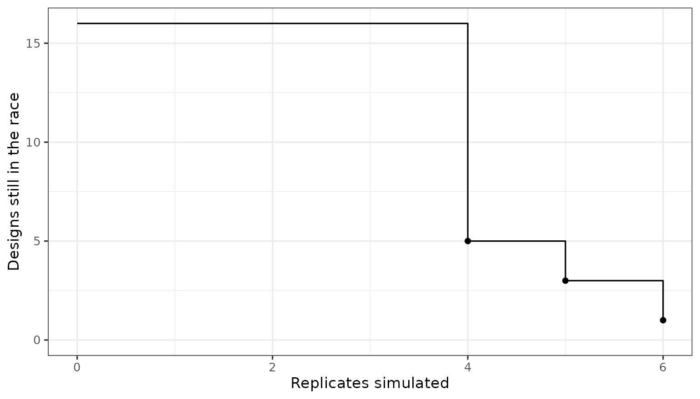

A simulation study gives you a table of designs and their average outcomes. This article is about turning that table into a decision. Real decisions rarely have one goal: you want more gain, and lower cost, and enough genetic diversity left for the future. tidyagsim has a helper for each way of weighing those goals, and each is shown here with a picture.
The question
A recurrent selection program runs ten cycles. Each cycle we grow and
measure progeny plants at 15 dollars a plot and intermate
the best n_select. Which combination should we run?
recurrent <- alphasim_program(
function(founders, SP, n_select, progeny, cycles) {
tracker <- asr_tracker(founders)
pop <- founders
for (cycle in seq_len(cycles)) {
pop <- setPheno(pop)
parents <- selectInd(pop, n_select)
pop <- randCross(parents, nCrosses = progeny)
tracker$record(pop, year = cycle, cost = progeny * 15)
}
asr_summary(tracker)
},
n_select = tune(), progeny = tune(), cycles = 10,
founders = asr_founders(n_founders = 200, n_chr = 10, seg_sites = 100, plot_h2 = 0.3),
params = list(n_select = sim_param(c(4, 60), label = "Parents kept"),
progeny = sim_param(c(100, 600), label = "Plants per cycle")),
check = function(n_select, progeny) if (n_select > progeny / 2) "Keep at most half the plants."
)
metrics <- sim_metric_set(release_gain, cost, genetic_variance)The check function marks impossible designs, so tuners
skip them. The metric set lists what we care about, and says which
direction is better for each: more gain, lower cost, more genetic
variance left.
Run a grid
grid <- expand.grid(n_select = c(5, 10, 20, 40), progeny = c(100, 200, 400))
res <- tune_grid(recurrent, sim_replicates(20, seed = 1), grid = grid, metrics = metrics)
res
#> # Simulation study (grid): 12 designs x 20 replicates x 1 scenario(s) = 240 simulations
#> # Spec: alphasim_program; metrics: release_gain, cost, genetic_variance
#> # Best by release_gain:
#> # A tibble: 3 × 7
#> n_select progeny .metric mean n std_err .config
#> <dbl> <dbl> <chr> <dbl> <int> <dbl> <chr>
#> 1 20 400 release_gain 4.66 20 0.0900 Config011
#> 2 10 400 release_gain 4.54 20 0.147 Config010
#> 3 10 200 release_gain 4.14 20 0.141 Config006Twelve designs, twenty replicates each, and one line of code. A heat map shows the whole table at once:
wide <- collect_metrics(res, type = "wide")
ggplot(wide, aes(factor(n_select), factor(progeny), fill = release_gain)) +
geom_tile(colour = "white") +
geom_text(aes(label = sprintf("%.1f", release_gain)), colour = "white") +
scale_fill_viridis_c(end = 0.9) +
labs(x = "Parents kept", y = "Plants per cycle", fill = "Gain",
title = "Gain after ten cycles (founder genetic SDs)")
Four ways to pick
1. Just the best. show_best() ranks by
one metric:
show_best(res, metric = "release_gain", n = 3)
#> # A tibble: 3 × 7
#> n_select progeny .metric mean n std_err .config
#> <dbl> <dbl> <chr> <dbl> <int> <dbl> <chr>
#> 1 20 400 release_gain 4.66 20 0.0900 Config011
#> 2 10 400 release_gain 4.54 20 0.147 Config010
#> 3 10 200 release_gain 4.14 20 0.141 Config0062. The best you can afford. Constraints filter designs by their average outcomes before ranking. With a total budget of 30,000 dollars:
show_best(res, metric = "release_gain", constraints = list(cost = 30000), n = 3)
#> # A tibble: 3 × 7
#> n_select progeny .metric mean n std_err .config
#> <dbl> <dbl> <chr> <dbl> <int> <dbl> <chr>
#> 1 10 200 release_gain 4.14 20 0.141 Config006
#> 2 20 200 release_gain 4.00 20 0.0955 Config007
#> 3 10 100 release_gain 3.96 20 0.118 Config0023. The cheapest that is nearly the best. The top designs’ averages are often within Monte Carlo error of each other. The one standard error rule takes the best design’s average minus one standard error as “good enough”, and picks the cheapest design that reaches it:
select_by_one_std_err(res, cost, metric = "release_gain")
#> # A tibble: 1 × 3
#> n_select progeny .config
#> <dbl> <dbl> <chr>
#> 1 20 400 Config011
best <- show_best(res, metric = "release_gain", n = 1)
bar <- best$mean - best$std_err
pick <- select_by_one_std_err(res, cost, metric = "release_gain")
wide$picked <- wide$.config == pick$.config
ggplot(wide, aes(cost, release_gain)) +
geom_hline(yintercept = bar, linetype = 2) +
geom_pointrange(aes(ymin = release_gain - release_gain_se, ymax = release_gain + release_gain_se,
colour = picked)) +
scale_colour_manual(values = c(`FALSE` = "grey50", `TRUE` = "#E45756"), guide = "none") +
labs(x = "Total cost (dollars)", y = "Gain after ten cycles",
title = "The one-standard-error rule",
subtitle = "Dashed: best design minus one SE. Red: cheapest design at or above it.")
Here the rule picks the best design itself. No cheaper design comes within one standard error of it, so in this program the extra plants are worth paying for. With a flatter response, the rule would point to a cheaper design and save money for almost no loss in gain.
4. The trade-off itself. Gain now and diversity for later pull against each other, and no single number settles that. The Pareto front lists the designs that no other design beats on both at once. Every other design is dominated, meaning something else is at least as good on both:
pareto_front(res, metrics = c("release_gain", "genetic_variance"))
#> # A tibble: 4 × 7
#> n_select progeny release_gain release_gain_se genetic_variance
#> <dbl> <dbl> <dbl> <dbl> <dbl>
#> 1 40 100 2.92 0.0664 0.350
#> 2 40 200 3.57 0.0879 0.322
#> 3 40 400 4.13 0.0711 0.294
#> 4 20 400 4.66 0.0900 0.238
#> # ℹ 2 more variables: genetic_variance_se <dbl>, .config <chr>
The front is a menu, not an answer. A program with a long horizon might pick from its diverse end, and a program that must release a variety in five years might pick from its high-gain end. The decision is yours, and the picture makes it an informed one.
Searching larger spaces
A grid of twelve designs is easy to run in full. With more settings, or wider ranges, the grid grows quickly. Two smarter searches cut the work.
Racing runs every design on a few replicates, then drops the ones that are clearly worse than the leader before running more:
race <- tune_race(recurrent, sim_replicates(20, seed = 1), grid = 16, metrics = metrics,
burn_in = 4)
race
#> # Simulation study (race): 16 designs x 20 replicates x 1 scenario(s) = 86 simulations
#> # Spec: alphasim_program; metrics: release_gain, cost, genetic_variance
#> # Best by release_gain:
#> # A tibble: 3 × 7
#> n_select progeny .metric mean n std_err .config
#> <int> <int> <chr> <dbl> <int> <dbl> <chr>
#> 1 24 590 release_gain 4.72 20 0.131 Config007
#> 2 21 461 release_gain 4.70 6 0.208 Config006
#> 3 38 439 release_gain 4.43 5 0.231 Config010
autoplot(race, type = "race")
The race used 86 simulations, compared with 320 for the full grid.
Bayesian optimization fits a statistical model to the designs it has run and uses it to choose the next design to try. It can respect constraints too, here the highest gain within the 30,000 dollar budget:
bo <- tune_bayes(recurrent, sim_replicates(10, seed = 1), metrics = metrics,
constraints = list(cost = 30000), initial = 6, iter = 10)
show_best(bo, metric = "release_gain", constraints = list(cost = 30000), n = 3)
#> # A tibble: 3 × 7
#> n_select progeny .metric mean n std_err .config
#> <int> <int> <chr> <dbl> <int> <dbl> <chr>
#> 1 14 190 release_gain 4.21 10 0.164 Config015
#> 2 17 197 release_gain 4.19 10 0.0991 Config011
#> 3 19 199 release_gain 4.13 10 0.191 Config012Summary
| Question | Helper |
|---|---|
| Which design is best on one metric? |
show_best(), select_best()
|
| Best within a budget or other limit? | show_best(constraints = ) |
| Cheapest design that is about as good as the best? |
select_by_one_std_err(),
select_by_pct_loss()
|
| Which designs are worth considering when goals conflict? |
pareto_front(),
autoplot(type = "pareto")
|
| Is design B really better than design A? | compare_designs() |
| Too many designs to run them all? |
tune_race(), tune_bayes()
|